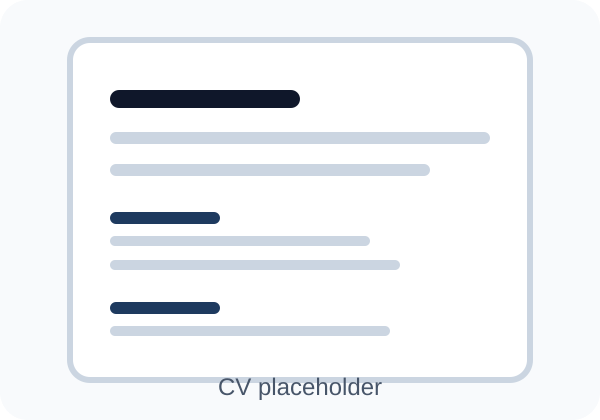

CV
Mijn CV
Deze pagina staat klaar voor je definitieve CV. Zodra je je CV uploadt, voeg ik hier de echte inhoud en een downloadknop naar je pdf toe.

CV volgt binnenkort
Voor de eerste versie van je portfolio is deze pagina al voorzien. Zodra jij je CV uploadt, maak ik hier:
- een nette online CV-weergave
- een downloadlink naar je pdf
- een betere skills-sectie op basis van je echte CV